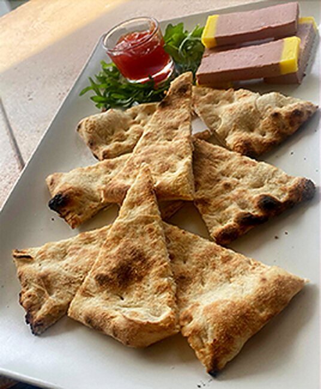
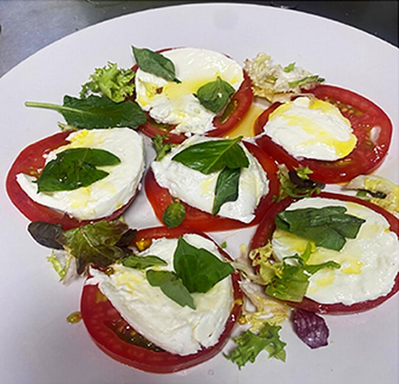
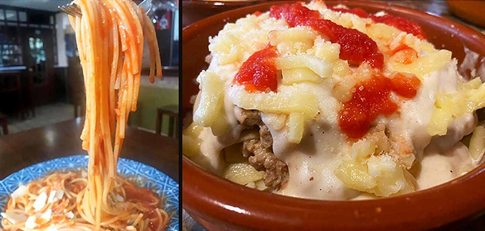
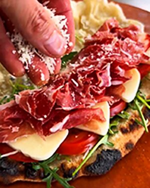
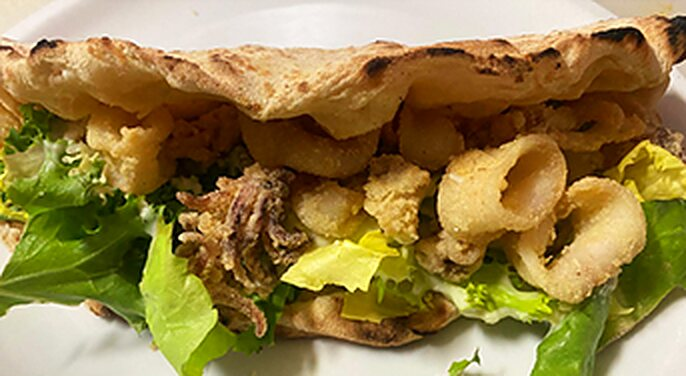

Pizza napolitana · Granada
Aviso:esta carta da hambre
Masa napolitana, tomate San Marzano y Fior di latte. Lo demás, lo eliges tú.
¿Ya la has probado?
Pizza
Portafoglio
Doblada y lista para comer con la mano.
5€

Pizza napolitana · Granada
Aviso:esta carta da hambre
Masa napolitana, tomate San Marzano y Fior di latte. Lo demás, lo eliges tú.
¿Ya la has probado?
Doblada y lista para comer con la mano.

Para abrir boca
Nuestra masa napolitana, AOVE
Nuestra masa napolitana rellena de mozzarella, tomate, ajo.
El mejor paté acompañado de nuestra base napolitana.
Queso Provolone, tomate San Marzano, orégano, AOVE.
Nuestra Fior di Latte, tomate San Marzano, orégano, AOVE.
Nuestra masa napolitana rellena con 4 tipos de queso.
Patatas gajo con nuestra salsa brava (picante).
Patatas especiadas, salsa blanca, salsa ranchera, bacon crunchy, mezcla de quesos gratinados.
Auténticos nuggets de pollo con patatas fritas.

Frescas y con color
Tomate selección, mozzarella fresca, rúcula, orégano, AOVE.
Mezcla de lechugas, pollo crunchy, croutons, queso, cebolla krispy, york, salsa césar.
Mezcla de lechugas, maíz, york, piña, zanahoria, croutons, surimi de cangrejo, salsa rosa.
Mezcla de lechugas, tomate, maíz, zanahoria, aceitunas, atún, remolacha.
Para hambre de la buena
Pollo crunchy, lechugas, tomate, queso, cebolla caramelizada, salsas y patatas fritas.
Ternera 100%, lechugas, tomate, queso, salsas y patatas fritas.
Ternera 100%, lechugas, tomate, queso, bacon, huevo, salsas y patatas fritas.
Ternera 100%, lechugas, tomate, queso, cebolla crujiente, jalapeños, salsas y patatas fritas.
Costillas de cerdo marinadas en salsa barbacoa al horno y patatas gajo.
Polpettes de carne, tomate San Marzano, queso parmesano, albahaca, AOVE. Acompañado de nuestra masa napolitana.

Cremosas, al horno, con parmesano
Tortiglioni, tomate, nata, champiñón, m. pizza, carne boloñesa, huevo duro, mozzarella y AOVE.
Pasta, salsa boloñesa, bechamel, mozzarella, parmesano.
Pasta, vegetales, bechamel, tomate, mozzarella, parmesano.
Berenjenas, tomate San Marzano, bechamel, mozzarella, parmesano.
Pasta, crema de nata, bacon, huevo, pimienta.
Pasta, york, champiñón, tomate San Marzano, nata, parmesano.
Pasta, salsa boloñesa, tomate San Marzano.
Pasta, crema de nata, mix 4 tipos de queso.
Tortellini, crema de albahaca, nueces, parmesano.
Ravioli, salsa pesto, parmesano.
Pappardelle, nata, parmesano, salsa tartufata, mix de fungui e porcini.

Las de toda la vida
Masa napolitana · Tomate San Marzano · Fior di latte
Tomate San Marzano, Fior di latte, albahaca, AOVE.
Tomate San Marzano, ajo, AOVE, orégano.
Tomate San Marzano, Fior di latte, jamón cocido, albahaca.
Tomate San Marzano, Fior di latte, pepperoni, albahaca.
Tomate San Marzano, Fior di latte, jamón cocido, champiñón, albahaca.
Tomate San Marzano, Fior di latte, atún, cebolla, albahaca.
Tomate San Marzano, Fior di latte, anchoas, alcaparras, aceitunas negras.
Tomate San Marzano, Fior di latte, chorizo picante, cebolla, aceitunas negras.
Tomate San Marzano, Fior di latte, champi, cebolla, pimiento, calabacín.
Tomate San Marzano, Fior di latte, jamón cocido, champiñón, alcachofas, atún (a cuartos).
Crema de nata, Fior di latte, bacon, champiñón, cebolla, huevo, pimienta.
Tomate San Marzano, Fior di latte, carne boloñesa, cebolla, bacon, salsa barbacoa.
Tomate San Marzano, Fior di latte, mix 4 tipos de queso, albahaca.
Tomate San Marzano, Fior di latte, jamón cocido, piña, albahaca.
Tomate San Marzano, Fior di latte, pollo estilo kebab, salsa blanca.
Cuando ya lo has probado todo
Tomate San Marzano, Fior di latte, cebolla, virutas de torrezno, tomate seco, albahaca.
Fior di latte, gorgonzola, ricotta, parmesano, cheddar.
Tomate San Marzano, Fior di latte, p.cotto, champiñón, alcachofas, atún, anchoas, aceitunas negras, albahaca.
Tomate San Marzano, Fior di latte, p.cotto, champiñón, pimiento, carne boloñesa, roquefort.
Tomate San Marzano, Fior di latte, gambas, champiñón, roquefort.
Tomate San Marzano, Fior di latte, queso de cabra, cebolla caramelizada, nueces, miel.
Crema de nata, Fior di latte, mix de hongos, virutas de torreznos, cebolla caramelizada, salsa tartufada.
Tomate San Marzano, Fior di latte, j. serrano duroc, tomates cherry, rúcula, parmesano y AOVE.
Tomate San Marzano, Fior di latte, mortadela, pistachos, carne boloñesa, ricotta, albahaca.
Tomate San Marzano, Fior di latte, manzana, morcilla, queso de cabra, cebolla caramelizada.
Tomate San Marzano, Fior di latte, mortadela de pistacho, burrata, parmesano, pistachos, pesto.
Tomate San Marzano, mozzarella de búfala, rúcula, tomates cherry, parmesano, AOVE.
Tomate San Marzano, Fior di latte, carne boloñesa, cebolla, albahaca, jalapeños y salsa chipotle.
Tomate San Marzano, Fior di latte, tomate seco, secreto ibérico, pesto o tartufata, albahaca y AOVE.

Nuestra masa, rellena hasta arriba
Ricotta, mix lechugas, mahonesa o alioli, calamares a la romana.
Ricotta, mix lechugas, mortadela de pistacho, burrata, salsa pesto.
Ricotta, mix lechugas, jamón serrano duroc, tomates secos, parmesano y AOVE.
Polpettes de carne con tomate, gorgonzola, parmesano, albahaca.
Ricotta, mix de lechugas, salsas, salsiccia original, cebolla crispy, tomates secos, remolacha.
Guarda un hueco
Dulce de bizcocho, mascarpone, crema pastelera, nata, café, cacao.
Combinación de quesos, nata y huevos al horno con toque de fresa.
De fabricación granaína.
Masa napolitana, nutella, azúcar glas, pistacho.